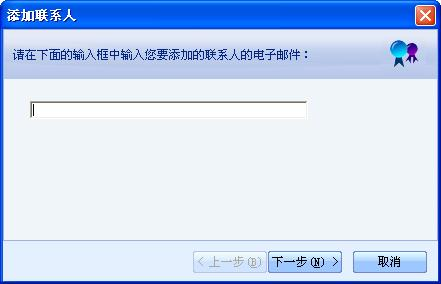
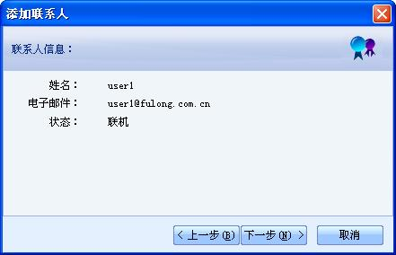

点击联系人标签栏里的“添加联系人”按钮，弹出添加联系人向导，如下图所示。

图1 添加联系人-输入电子邮件
输入对方电子邮件，点击“下一步”；

图2 添加联系人-联系人不存在
如果该用户不存在的提示界面

图3 添加联系人-联系人信息
如果联系人存在，显示该联系人的基本信息，点击下一步，发送添加联系人的请求。

图4 添加联系人-发送请求
点击“完成”结束添加联系人，点击“添加下一个”继续添加联系人。
被添加的联系人收到请求，如下图所示，点击“是”，在双方的联系人列表中添加对方为联系人。

图5 提示添加联系人

图6 同意添加联系人
联系人名称后面的括号中显示联系人的状态：联机或脱机。